Appendix A — GitHub Repository File Structure
HBC Radio is a plugin (an add-on) for ATAK, the Android Team Awareness Kit mapping app. It lets ATAK devices share map information — positions, markers, chat messages, and alerts — using ordinary handheld ham radios instead of the internet or a cell network. The phone plays specially coded sound into the radio; another phone hears that sound on its radio and turns it back into map data.
The system is built in three layers, like a stack of responsibilities. Each layer is specified in its own section of this document:
The path one message takes from your screen to the other station’s screen:
ATAK map event → HBC encoder (shrinks it to bytes) → MeshRouter (adds addressing) → modem (turns bytes into audio) → radio → ...air... → radio → modem → MeshRouter → HBC decoder → ATAK map
On receive, the mesh layer decides what to do with each frame: deliver it to this device, forward it toward its destination, rebroadcast it (announces), or ignore it.
| Layer | Code that implements it | How things are addressed |
|---|---|---|
| Application | HbcEncoder / HbcDecoder | Callsign inside the HBC header; predictable UIDs (section 5.3) |
| Network | MeshRouter | Origin / Transmitter / Destination / Next-hop callsigns |
| Physical | AudioModem, OfdmModem, MercuryModem | None — just a byte pipe (AFSK adds a fixed AX.25 wrapper for station ID) |
A station that hears the radio mesh AND sits on a normal ATAK network at the same time (WiFi mesh SA or a TAK server connection) can act as a C2 Bridge: a command-post gateway that pushes the radio picture onto the network without ever letting network-volume traffic flood the slow radio channel. Enabled by the C2 Bridge checkbox (Options tab); the header shows · BRIDGE while active.
A modem converts bytes into sound and sound back into bytes. HBC Radio offers three, each suited to different radios and conditions. All three carry the exact same mesh frame, but they are not compatible with each other — every station on a channel must select the same modem (Figure 3).
| Parameter | AFSK1200 | OFDM COFDMTV | Mercury HF |
|---|---|---|---|
| Waveform | Bell 202 AFSK, 1200 baud | QPSK OFDM (rattlegram “short”), 1600 Hz BW | FreeDV DATAC4 raw-data OFDM (codec2) |
| Sample rate | 48000 Hz | 48000 Hz | 8000 Hz |
| Payload capacity per burst | Practical AX.25 limits (>200 B) | 169 B | 52 B (54 B frame minus framing) |
| Error protection | HDLC CRC-16 (detect only) | Polar code + CRC-32 | LDPC + CRC-16 |
| Best for | VHF/UHF FM; compatible with classic packet radio | VHF/UHF FM; survives phone audio processing | HF SSB; works at very weak signal levels |
The classic 1980s packet-radio sound (two alternating tones, 1200 bits per second). Mesh
frames ride inside a single AX.25 “UI” frame. The AX.25 addresses are only
wrapping paper — they are not used for routing: destination is always
HBC, source is the operator’s ham callsign (which doubles as the legal
station ID), and no digipeater path is used. Each transmission is rendered in advance as:
lead-in silence (150 ms) → optional VOX leader tone → HDLC flag preamble
(“TX Dwell,” default 500 ms) → the frame → tail silence (250 ms).
A modern, robust waveform that packs data onto many small carriers at once. Framing inside the 170-byte block: byte 0 = mesh frame length (1–169), bytes 1..n = the mesh frame, zero-padded. The operator callsign also rides in the waveform’s own metadata header. Audio carrier is 1500 Hz; the VOX leader is made of noise symbols (~180 ms each).
Designed for long-range HF radio, where signals are weak and distorted. The burst layout
matches the Mercury HF modem exactly: preamble → one DATAC4 data frame with a CRC-16
checksum in its last two bytes → postamble, with 100 ms of silence on each end. Framing
inside the 54 usable bytes: byte 0 = length, byte 1 = the letter 'H' (a marker
that says “this is HBC traffic”), bytes 2..n = the mesh frame, zero-padded.
Only one station can talk on a radio channel at a time; two at once garble both (a “collision”). In CSMA mode (the default and the only mode before plugin 0.22), every modem listens first: incoming audio energy is compared against an automatically learned background-noise level, and the channel counts as busy when audio is 4× louder than that background (held for 400 ms past the last loud moment so brief gaps inside someone’s transmission don’t look like free air). When the channel goes quiet, the station still waits a random 150–550 ms — so two stations that were both waiting don’t key up at the same instant. After 8 seconds of continuous busy (15 s on Mercury) the frame is sent anyway so traffic can never be blocked forever. AFSK also uses its demodulator’s data-carrier-detect as a second “someone is talking” signal.
New in plugin 0.22. Instead of competing for the channel, stations take turns in a fixed, known order: every station sorts the callsigns it knows about (its own plus the mesh address book of section 4.7, which fills itself just by listening) and rotates through that list. The list IS the schedule — there is no coordinator station, no “token” packet, and no change to anything transmitted on the air: the MAC only decides when a station may key up, never what the bytes look like. 0.21 and 0.22 stations therefore interoperate; a CSMA station in a Ring net is simply heard as carrier and deferred to.
A station transmits only during its own turn — and then sends everything it has queued as one continuous keying (one batch: single lead-in, frames back-to-back, single tail), so the radio’s VOX hang is paid once per turn instead of once per frame. Every station advances the turn pointer on its own, using whichever of these happens first:
| Rule | Trigger | Purpose |
|---|---|---|
| 1. Early release | The owner’s carrier was heard and the channel has then stayed clear for Guard ms | Short messages finish early; Guard absorbs the radio’s VOX hang so the tail is never mistaken for free air |
| 2. Silent skip | No carrier within Skip ms of the turn starting | Idle stations cost ~1 s, not a whole turn |
| 3. Deadline | Max turn + Guard ms since the turn started | Keeps the ring alive past hidden terminals and dead stations — even a station that hears nothing advances |
Two additional behaviors keep every station’s pointer agreeing: decoding any mesh frame re-aligns the pointer to that frame’s Transmitter callsign (hard evidence beats timers), and a station never keys up while the channel is busy (interlock), even on its own turn. A joining station listens for one full cycle (at most 30 s) before taking its first turn; roster changes apply only when the rotation wraps. A station that stays silent for 3 consecutive turns is noted as dormant (it keeps costing only the Skip time until the mesh route TTL removes it). 911 alerts are the one exception to turn order: they may transmit in the next idle gap between turns after a short random delay.
| Setting (Audio Setup tab) | Default | What it covers |
|---|---|---|
| Guard ms | 1500 | The radio’s VOX hang after audio stops, plus margin |
| Skip ms | 1200 | VOX attack (~250 ms) + time to detect the carrier before declaring a station silent |
| Max turn ms | 0 = automatic per modem (AFSK 6000, OFDM ~4400, Mercury ~6000) | The longest allowed batch; also the deadline timer |
Capacity (20 stations, 5 of them with traffic in a given cycle, defaults):
AFSK ≈ 32 s per full rotation, OFDM ≈ 35 s, Mercury ≈ 54 s. So that
position reports never dominate the rotation, Ring mode automatically floors the PLI
interval at roster × 8 s (× 13 s on Mercury), even if
the user’s “PLI min s” is set lower — that keeps PLIs at roughly a
quarter of each station’s turn capacity, leaving the rest for chat, ACKs and relays
(raised from × 6 s / × 10 s in 0.23 after field testing).
Ring: TX queue…). Raising Max
turn (identically on every station) now also raises how many frames fit in one batch,
so operators can trade longer turns for faster queue drain.Implements “Adaptation of Uncoordinated Distance-Vector Routing for Unencrypted Amateur Radio Networks” (see References), with one approved deviation: packet payloads carry compact HBC binary rather than ITA2 text.
Every mesh packet starts with the same 13 bytes:
| Byte offset | Length | Field | Description |
|---|---|---|---|
| 0 | 1 | Packet Type | 0x01 Announce, 0x02 Broadcast, 0x03 Direct, 0x04 ACK |
| 1 | 5 | Origin Callsign | Who originally created the packet (bit-packed ITA2, section 4.2) |
| 6 | 5 | Transmitter Callsign | Who is transmitting this particular hop; each relay overwrites it with its own callsign |
| 11 | 2 | Sequence ID | A 16-bit counter value (big-endian) used to recognize duplicates (section 4.8) |
Callsigns are stored in an old teletype alphabet called ITA2, which uses only 5 bits per
character instead of 8 — so 8 characters fit in exactly 5 bytes (40 bits). Two special
“shift” codes switch between letters (LTRS = 11111) and figures/digits
(FIGS = 11011); unused positions are filled with NULL (00000).
A leading LTRS is written before the first letter; if a callsign would need 9 codes (for
example KE8TQB), the leading LTRS is dropped — decoders start in letters
mode anyway, so both forms read back identically.
| Example | Code sequence | Packed bytes (hex) |
|---|---|---|
| K1ABC | LTRS K FIGS 1 LTRS A B C | FF B7 DF E2 6E |
| N3DEF | LTRS N FIGS 3 LTRS D E F | F9 B7 0F CA 16 |
| W2XYZ | LTRS W FIGS 2 LTRS X Y Z | FE 77 9F DE B1 |
BF, but the paper’s own bit-by-bit math works out to DF; this
implementation follows the math. All three vectors above are locked in by the automated test
suite (codec-test/MeshRouterTest.java).A tiny “I exist and here’s how far away I am” packet that builds everyone’s address book.
| Byte offset | Length | Field | Description |
|---|---|---|---|
| 0–12 | 13 | Common Header | Type = 0x01 |
| 13 | 1 | Hop Count | How many relays the announce has passed through; the origin sets 0, each relay adds 1 |
A message to everyone in earshot. Not relayed, not acknowledged.
| Byte offset | Length | Field | Description |
|---|---|---|---|
| 0–12 | 13 | Common Header | Type = 0x02 |
| 13+ | variable | Payload | One HBC message (section 5) |
A message for one specific station, passed hop-by-hop.
| Byte offset | Length | Field | Description |
|---|---|---|---|
| 0–12 | 13 | Common Header | Type = 0x03 |
| 13 | 5 | Destination Callsign | The final recipient |
| 18 | 5 | Next Hop Callsign | The neighbor being asked to carry this hop; each relay rewrites it |
| 23+ | variable | Payload | One HBC message |
A station that sees its own callsign in Next Hop looks the Destination up in its address book, writes in the next station’s callsign, and re-transmits. The final destination delivers the payload and answers with an ACK (section 4.6). If nobody knows a route, a relay drops the packet; the original sender instead falls back to sending it as a Broadcast.
The “got it!” receipt for a Direct message, sent back to the original sender.
| Byte offset | Length | Field | Description |
|---|---|---|---|
| 0–12 | 13 | Common Header | Type = 0x04. Origin = the station acknowledging. |
| 13 | 5 | Destination Callsign | The Origin of the Direct being acknowledged |
| 18 | 2 | Acked Sequence ID | The Sequence ID of the Direct being confirmed |
Stations along the way forward ACKs toward their destination when they know a route; the duplicate cache (section 4.8) keeps that from snowballing.
Without protection, a rebroadcast message could bounce between stations forever. Each
receiver therefore remembers [Origin + Sequence ID + Type] combinations for
5 minutes; a packet it has already seen is silently ignored. One deliberate exception: a
duplicate Direct addressed to this station gets a fresh ACK (but is not delivered
twice) — that covers the case where the first ACK was lost on the air.
Directs work “fire and wait”: the originator keeps the message until the destination’s ACK arrives, re-sending it with the same Sequence ID up to 3 times, then declaring it failed and logging it. Broadcasts are never acknowledged or retried. Two refinements (plugin 0.23) let this ARQ coexist with the Ring MAC:
Chat delivered/read receipts (section 5.4) are sent as unacknowledged Directs (0.23): identical on the wire, but with no retries and no failure verdict — a lost checkmark does not justify retry traffic. The recipient still answers with a mesh ACK, which the origin simply ignores.
The payload inside every Broadcast/Direct is one HBC message: a map event squeezed into as few bytes as possible by packing values bit-by-bit instead of sending bulky XML text. (For scale: a normal ATAK position report is roughly 1–2 thousand bytes of XML; the HBC version is about 15 bytes.) Full field-level definitions and worked byte examples live in the HBC-Protocol repository (see References); this section summarizes the interface.
| Field | Size | Description |
|---|---|---|
| Callsign | variable (ITA2, CR-terminated) | Sending operator/device callsign, max 8 characters |
| Version | 3 bits | 000 = version 1 |
| Mode | 3 bits | mode−1 for Modes 1–6; 111 = Mode 0 Ack |
| Mode | CoT type(s) | What it carries | Typical size |
|---|---|---|---|
| 0 Ack | b-t-f-d / b-t-f-r | Chat delivered/read receipt: recipient callsign, kind (2 bits), 16-bit tag | ~12 B |
| 1 PLI / Spot | a-f-G, a-h-G, a-n-G, a-u-G | Position report: spot flag, affiliation (2 bits), name (7 chars), latitude/longitude (21+22 bits) | ~15 B |
| 2 Alert | b-a-o-tbl / b-a-o-can | 911 emergency: active flag, alert + originator names, position | ~18 B |
| 3 GeoChat | b-t-f | Text message: destination kind (All / Room / DM), room or recipient, DM 16-bit tag, ITA2 text | DM “helo landing zone” = 23 B |
| 4 Shape | u-d-c-c / u-d-r / u-d-f | Drawing: circle (center + radius) or polygon/polyline (≤15 points) | varies |
| 5 CASEVAC | b-r-f-h-c | Medical evacuation request (9-line summary fields) | ~20 B |
| 6 Extended Marker | any placed marker | Full CoT type token, icon reference (2525C / spot-map / custom), color tint | varies |
ATAK identifies every map object by a UID (unique ID string). HBC does not transmit UIDs — both ends compute the same one from the callsign, so a station’s position marker updates in place instead of piling up duplicates:
| Object | UID rule |
|---|---|
| Position (PLI) marker | HBC-{CALLSIGN} |
| 911 alert | HBC-{CALLSIGN}-911 |
| DM conversation | Recipient’s UID; the receiving plugin swaps in its real ATAK device UID so the message lands in the right chat window |
| Spots / shapes / markers | Random UUID each time one is received |
Every chat DM carries a 16-bit tag — a CRC-16/CCITT-FALSE checksum (polynomial
0x1021, initial value 0xFFFF) of ATAK’s internal messageId. When the
recipient’s ATAK automatically generates its delivered/read receipts, the plugin
converts them into tiny Mode 0 Acks that echo the tag back over the air; the sender matches
the tag to the original messageId and injects the receipt, so ATAK’s familiar
delivered/read checkmarks work end-to-end over radio. These application-level receipts are
separate from (and in addition to) the mesh-layer ACKs of section 4.6. Since 0.23 they are
carried as unacknowledged Directs (section 4.9) — best-effort by design.
ATAK only lists a station in its chat/contact pickers when that station’s position
report includes a network “endpoint.” Received PLIs are therefore reconstructed
with <contact callsign="..." endpoint="*:-1:stcp"/> and a
<__group> team entry, so hearing a single position report makes the
station selectable for chat and file/point sends. Outgoing traffic to that contact is
intercepted by the plugin and transmitted over the mesh.
All configuration lives in one pane, opened from the HBC Radio entry in ATAK’s Tools menu (Figure 1). This section shows each screen (6.1), explains every control (6.2) and toolbar icon (6.3), and teaches how to read the two logs (6.4, 6.5). Red boxes and numbered markers in the figures point at the controls each caption describes.
All figures show the 0.26 pane: three tabs (Audio Setup, Options, Decodes) under a slim always-visible header carrying the colored status line, the build stamp and the Start/Stop button.
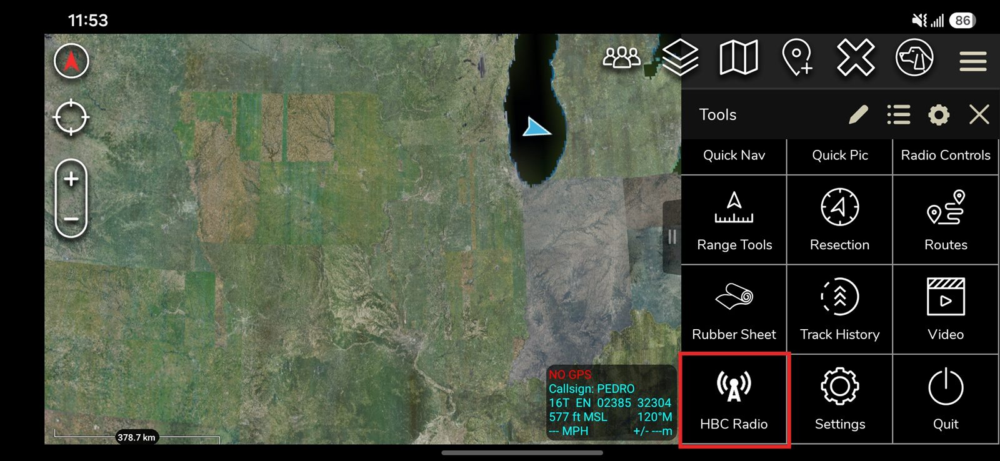
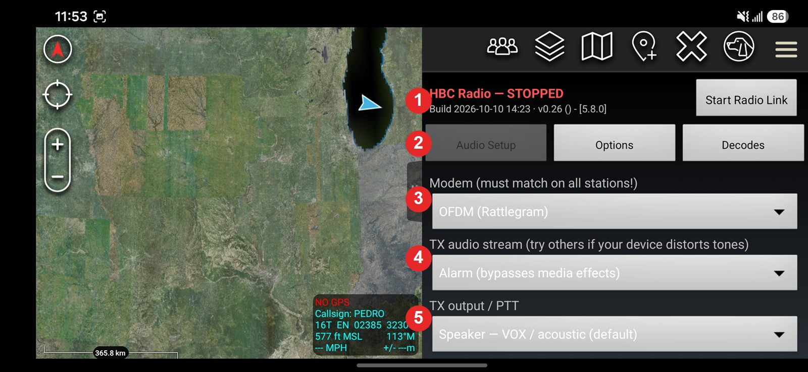
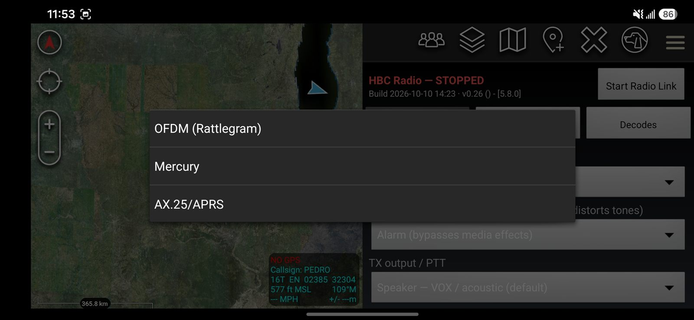
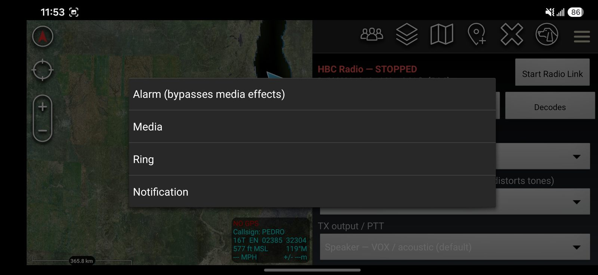
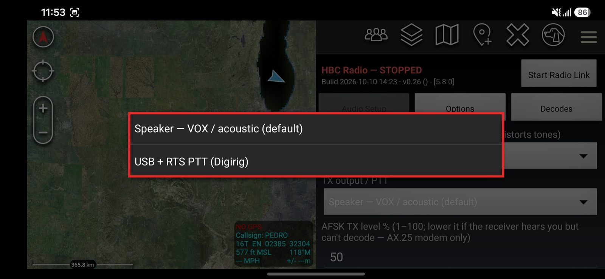
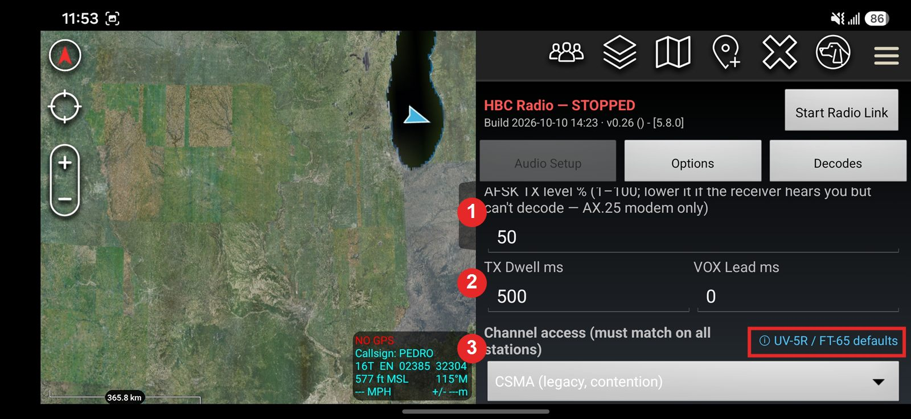
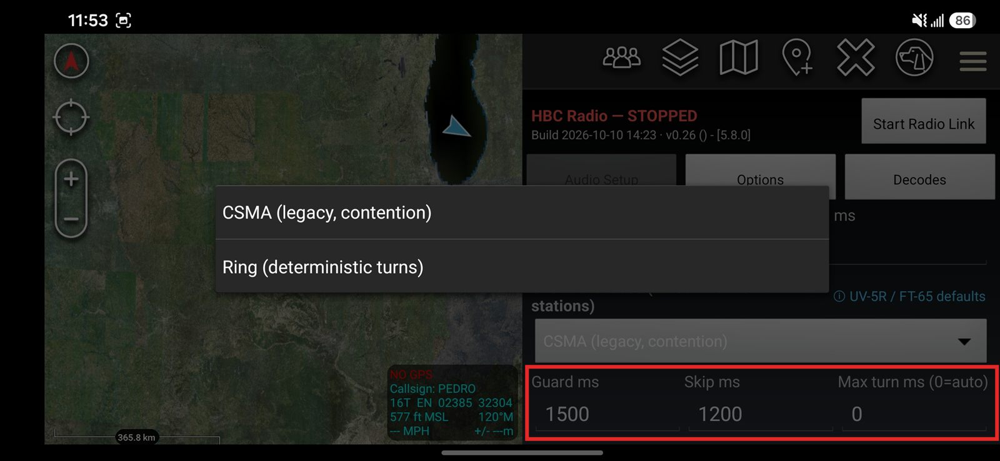
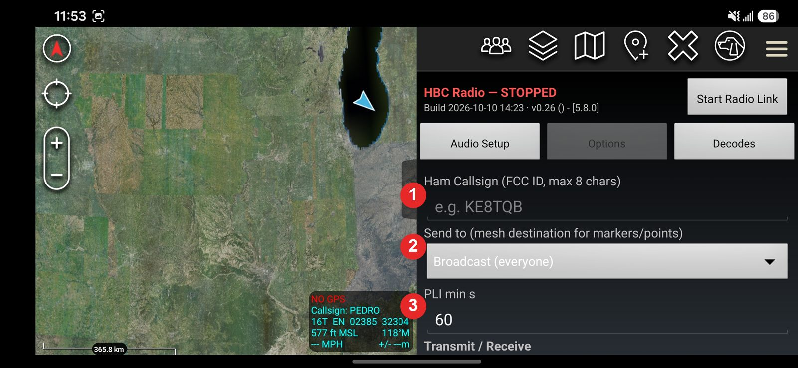
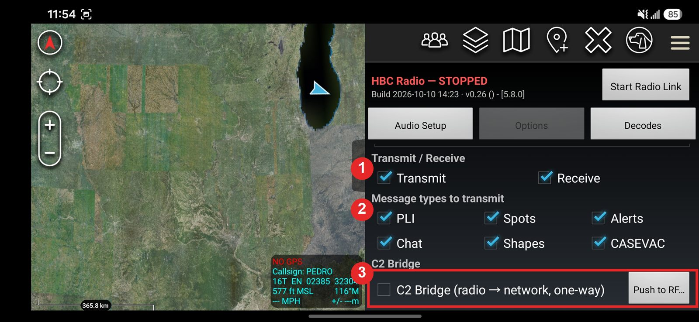
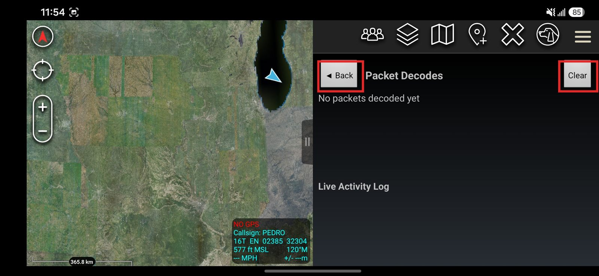
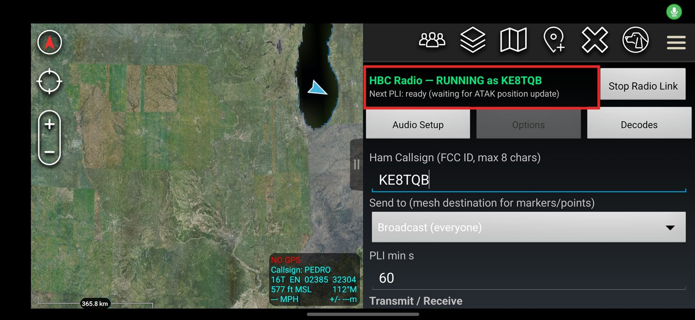
RUNNING as {callsign}) with the live Next-PLI line beneath it, and the
button flips to Stop Radio Link.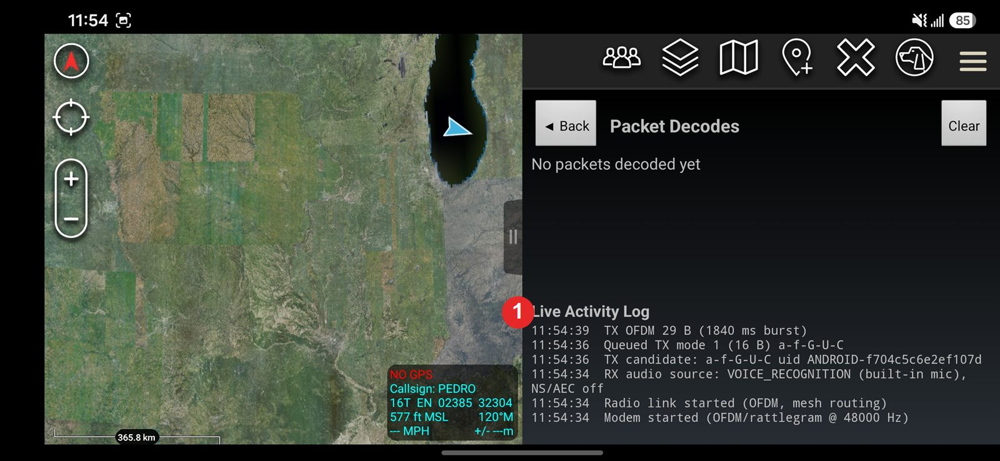
TX candidate → Queued TX → TX OFDM … ms burst) — the
exact lines cataloged in section 6.4.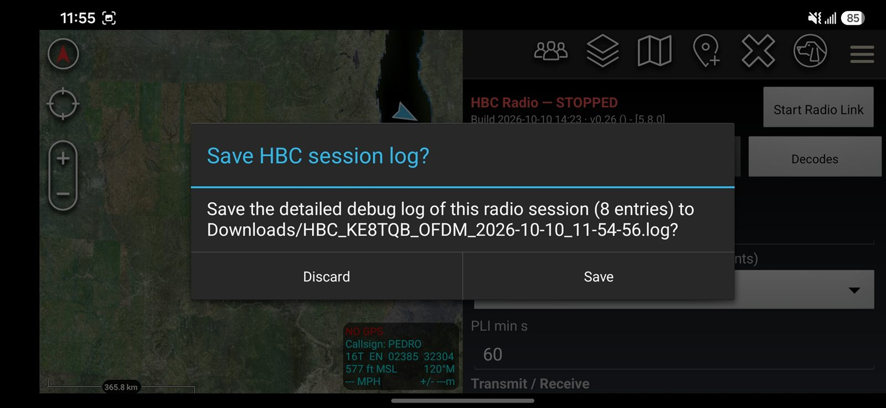
Grouped by where each control lives in the 0.26 pane:
| Control | Type | What it does |
|---|---|---|
| Audio Setup / Options / Decodes | Tab buttons | Switch screens; the active tab’s button is grayed out. Decodes opens as a full-panel page (header and tab bar hidden) with its own ◀ Back button returning to the last settings tab. |
| Status line | Text (header, always visible) | HBC Radio — RUNNING as {callsign} in green while the modem is on; HBC Radio — STOPPED in red otherwise. |
| Next PLI / Build line | Live text (1 s updates) | While running: countdown until the next position report may transmit (in m:ss, ready (waiting for ATAK position update), or disabled). While stopped: Build {timestamp} · v{version} — use it to verify which binary is actually installed. |
| Ham Callsign | Text field | Your FCC callsign, max 8 characters (A–Z, 0–9, hyphen). Used as this station’s mesh address and legal station ID. Required before starting. |
| Send to | Dropdown | Destination for markers/points you create: Broadcast (everyone), or any heard station for a routed, acknowledged Direct (section 4.5). Chat DMs ignore this and always route to their recipient automatically. |
| TX Dwell ms | Number field | AFSK only: length of the HDLC flag preamble sent before data so the receiving modem can sync. Default 500. Increase if receivers miss the start of packets. |
| VOX Lead ms | Number field | Warm-up audio played before data so a VOX-keyed radio has time to key up. Default 0 (use 0 with a hardwired PTT interface). Increase if the first part of transmissions is cut off. |
| PLI min s | Number field | Minimum seconds between your own position reports (rate limit). Default 60. Drives the “Next PLI” countdown. |
| Modem | Dropdown | Which of the three waveforms to use (section 3). Listed OFDM (Rattlegram), Mercury, AX.25/APRS; OFDM is the default. Must match on every station. |
| TX audio stream | Dropdown | Which Android audio channel carries the transmit tones (Figure 4). Default Alarm; try the others only if your device distorts the tones. |
| TX output / PTT | Dropdown | Where transmit audio goes and how the radio is keyed (0.25). Speaker — VOX / acoustic (default): audio plays from the phone speaker into the radio’s mic and the radio’s VOX (or a finger on PTT) keys the transmitter; TX audio is now explicitly pinned to the speaker even when a USB interface is attached. USB + RTS PTT (Digirig): TX audio is routed to the USB audio interface on the MEDIA stream (set Media volume to max — 0.26) and the plugin keys the radio electrically 60 ms before each burst: CP210x serial RTS on the Digirig Mobile, CM108 GPIO on the Digirig Lite (0.26) — no VOX attack or hang, so Guard 300–500 ms and VOX Lead 0 apply (ⓘ dialog). Requires a one-time Android USB permission. |
| Channel access | Dropdown | CSMA (legacy contention, section 3.4) or Ring (deterministic turns, section 3.5). Must match on every station. |
| ⓘ UV-5R / FT-65 defaults | Help link | Opens a dialog with the recommended Ring/VOX values for the reference radios, why their VOX hang cannot be shortened, the Guard calibration procedure, and hardwired-PTT alternatives (section 3.5). |
| Guard ms / Skip ms / Max turn ms | Number fields | Ring MAC timing (section 3.5): Guard covers the radios’ VOX hang (default 1500), Skip covers VOX attack before skipping a silent station (default 1200), Max turn caps one batch (0 = automatic per modem). Same values on every station. Since 0.23 a larger Max turn also fits more frames into each batch (faster queue drain at the cost of longer turns). |
| C2 Bridge (radio → network, one-way) | Checkbox (Options tab) | Activates the one-way data diode of section 2.1: decoded radio traffic is re-published onto the ATAK network, while network-origin events are blocked from automatic radio transmission and stashed for Push to RF. Takes effect immediately; the header shows · BRIDGE while on. |
| Push to RF… | Button (Options tab) | Opens a multi-select list of recently blocked network-origin items (newest 20, kept 10 minutes). Confirming transmits the selected items over radio once, through the normal HBC encode/queue path — the deliberate operator exception to the diode. |
| Transmit / Receive | Checkboxes | Master switches. Unchecking Transmit makes the station receive-only; unchecking Receive ignores all incoming audio. |
| PLI, Spots, Alerts, Chat, Shapes, CASEVAC | Checkboxes | Per-type transmit filters, matching the HBC modes of section 5.2. An unchecked type is never transmitted (receiving is unaffected). |
| Start / Stop Radio Link | Button (header, always visible) | Validates and saves the settings, then starts (or stops) the selected modem and the mesh layer. The label flips to match the current state. |
| Activity Log | Scrolling text | Timestamped diagnostic feed of everything the plugin does (section 6.4). Newest entries on top. |
| Clear (Decodes tab) | Button | Empties the Decodes log and resets its packet counter. |
| Icon | Tap | Notes |
|---|---|---|
| HBC Radio (radio-tower glyph) | Opens the plugin pane | The plugin’s single entry point in ATAK’s Tools menu (Figure 1). The Tools grid tints icons white, so the entry uses a transparent-background tower silhouette; the colored badge appears as the app icon in TAK Package Mgmt and the plugin manager. |
Every line starts with a HH:mm:ss timestamp; the newest line is at the top.
The tables below list the messages verbatim ({braces} mark values filled in at
runtime) and what each one means.
Radio link and modem:
| Message | Meaning |
|---|---|
| Radio link started ({modem}, mesh routing) | Start succeeded; the named modem and the mesh layer are running. |
| Radio link stopped | The modem was stopped (button, icon tap, or plugin shutdown). |
| Start failed: {error} | The modem could not start (usually a microphone/audio problem). The link is left stopped. |
| Modem started ... / RX audio source: {source} | Which microphone source the receiver opened (VOICE_RECOGNITION, UNPROCESSED, or MIC; “via USB” when a Digirig-style interface is attached). |
| RX disabled: microphone unavailable | ATAK lacks the RECORD_AUDIO permission or another app holds the mic; receiving is off. |
| TX {details} ({n} ms burst) | A transmission finished playing; n is its on-air duration. |
| CSMA: channel busy — deferring TX | Someone else is on the air; the plugin is politely waiting (section 3.4). |
| CSMA: channel busy > 8 s — transmitting anyway | The channel never cleared, so the frame was sent to avoid starving traffic. |
| OFDM sync: {call} ... / Mercury sync acquired | The demodulator locked onto an incoming signal (decode result follows). |
| TX batch: {n} frames ({t} ms burst) | Several queued frames went out as one continuous keying (one VOX cycle for the whole batch). |
| PTT: USB RTS ready ({name}) / PTT: USB GPIO ready ({name}) | The keyer is open — CP210x serial RTS (Digirig Mobile) or CM108 GPIO (Digirig Lite, 0.26); every transmission keys the radio electrically. |
| PTT: no Digirig PTT device found (CP210x serial or CM108 GPIO) — using VOX/manual keying | USB + RTS PTT is selected but no keyer hardware is attached; audio still plays, but the radio must be keyed by VOX or by hand. |
| PTT: TX audio uses the Media volume on USB — set Media volume to max | Reminder on engage (0.26): over USB the tones ride the MEDIA stream; a low Media volume makes TX into the radio faint. |
| PTT: requesting USB access — approve the dialog (RTS engages automatically) | Android is showing its “Allow ATAK to access the USB device?” dialog; after Allow, RTS PTT engages by itself (PTT: USB permission granted follows). Denying logs PTT: USB permission denied. |
| PTT: RTS write failed ({code}) — reconnect the Digirig and Stop/Start | The USB device stopped accepting the keying command (unplugged/re-enumerated); reconnect and restart the link. |
| PTT: Digirig attached — engaging / PTT: Digirig detached — RTS PTT off (VOX/manual keying) | Hot-plug while the link runs: attaching a Digirig engages PTT automatically; detaching falls back to plain audio. Since 0.26 every USB attach/detach also re-opens the receive path (a fresh RX audio source: … line follows) — no Stop/Start needed after a reconnect. |
Channel access (Ring MAC, section 3.5):
| Message | Meaning |
|---|---|
| Ring: started ({n} stations, guard {g} ms, skip {s} ms) | Ring mode is on with these parameters and this roster size. |
| Ring: joined rotation as {call} ({n} stations) | The listening (settle) period is over; this station now takes its turns. |
| Ring: TX turn ({i}/{n}, {x} frames) | It is this station’s turn and {x} queued frames were released as one batch. |
| Ring: roster now {n} stations ({list}) | The rotation list changed at a cycle wrap (station joined or expired). |
| Ring: {call} dormant (3 silent turns) | That station has not transmitted for 3 cycles; it keeps costing only the Skip time. |
| Ring: emergency frame queued — preempting at next idle window / Ring: emergency TX ({x} frames, preempt) | A 911 alert jumped the turn order in an idle gap (the single allowed exception). |
| Ring: TX queue {n} frames (~{t} s to drain) | More than 6 frames are waiting for this station’s turns (estimate from the measured rotation time; logged at most every 30 s). If it persists, slow down chat/marker sends — see section 3.5’s ARQ-interaction note. |
C2 Bridge (section 2.1):
| Message | Meaning |
|---|---|
| Bridge: {summary} -> network | A decoded radio event was re-published onto the ATAK network outputs (TAK server / mesh SA). |
| Bridge: blocked {type} {uid} (network-origin) — use Push to RF | The diode stopped a network-origin event from auto-transmitting over radio; it is available in the Push to RF list for 10 minutes. |
| Bridge: manual push mode {n} ({x} B) {type} -> RF | The operator selected this item in Push to RF; it was encoded and queued for radio exactly like native traffic. |
| Bridge: push skip: {reason} | A selected item has no HBC representation (unsupported type/characters) and was not transmitted. |
Transmit decisions:
| Message | Meaning |
|---|---|
| TX candidate: {type} uid {uid} | ATAK asked to send this event; the plugin is deciding whether to transmit it. |
| Queued TX mode {n} ({x} B) {type} | The event was encoded as HBC mode n (x bytes) and handed to the mesh for transmission. |
| Queued TX mode 0 ack ({type}) -> {call} tag 0x{tag} | A chat delivered/read receipt is being sent back to a DM sender (section 5.4). |
| TX skip: type {type} disabled in settings | Dropped: that message type’s checkbox is off. |
| TX skip: PLI rate limit | Dropped: a position report arrived before “PLI min s” elapsed (see the Next PLI countdown). |
| TX skip: duplicate within 10 s | Dropped: ATAK re-sent the same event; the copy was suppressed to save airtime. |
| TX skip: {reason} | Dropped: the event has no HBC representation (e.g. text with unsupported characters, coordinates out of range). |
Mesh routing:
| Message | Meaning |
|---|---|
| Mesh: route {call} via {call2} ({n} hops) | Address-book update: {call} is now reachable by handing frames to {call2}. A trailing [heard] means it was learned passively just by hearing traffic (section 4.7). The Send-to list refreshes. |
| Mesh: announce sent (seq {n}) | The 10-minute quiet-time keepalive announce went out. |
| Mesh: direct to {call} via {call2} (seq {n}) | A routed Direct left this station; an ACK is now awaited. |
| Mesh: direct to {call} via {call2} (seq {n}, unacked) | A fire-and-forget Direct (chat delivered/read receipt): no retries, no failure verdict (section 4.9). |
| Mesh: {call} acknowledged seq {n} | Delivery confirmed — the destination’s ACK arrived. |
| Mesh: retry {i}/3 to {call} via {call2} | No ACK yet; the Direct was re-sent (same sequence ID). Since 0.23 this fires only after the previous copy actually aired — under Ring, at least ~1.25 rotations later. |
| Mesh: direct to {call} FAILED (no ack after 3 retries) | Delivery gave up. The station is likely out of range or off. Also issued when queued copies could not reach the air for 3 minutes (stuck queue). |
| Mesh: no route to {call} — sending as broadcast | No address-book entry for the destination, so the message went out unrouted; the station will still get it if in direct range. |
| Mesh: forwarding {call} -> {call2} via {call3} | This station is acting as a relay for someone else’s Direct. |
| Mesh: no route to {call} — direct dropped | Asked to relay a Direct but no route to the destination is known. |
Receive decisions:
| Message | Meaning |
|---|---|
| RX {call} {summary} | A packet was decoded and injected into ATAK (the same event also appears in the Decodes tab, section 6.5). |
| RX chat: DM for '{call}' — not this station, ignored | A direct chat addressed to someone else was overheard and correctly not shown. |
| RX ack for '{call}' — not this station, ignored | Same, for a chat receipt. |
| RX ack tag 0x{tag} — no matching sent DM, ignored | A receipt arrived for a message this station has no record of sending (e.g. app restarted). |
| RX decode produced invalid CoT ({summary}) | The packet decoded but ATAK rejected the rebuilt event — report this as a bug. |
The Decodes page (Figure 10) lists only successfully decoded packets — a clean
record of what actually arrived. The header shows a running total
({n} packet(s) decoded; Clear resets it). Each entry has three lines:
[{MM-dd HH:mm:ss}] {origin callsign}
{message summary}
{n} B payload
The summary line identifies the HBC mode and its key contents:
| Summary format | How to read it |
|---|---|
| Mode 1 PLI {call} '{name}' @ {lat},{lon} | Position report from {call}; the marker {name} was placed/updated at those coordinates. Spot instead of PLI means a placed marker, not a self-position. |
| Mode 2 Alert(ACTIVE) {name} @ {lat},{lon} | A 911 emergency from {name} at that location. (CANCEL) means the emergency was called off. |
| Mode 3 Chat {call}: {text} | A chat message and its text (broadcast, room, or DM — DMs for other stations are never injected). |
| Mode 0 Ack(DELIVERED) {call} -> {call2} tag 0x{tag} | {call} confirms a DM from {call2} was delivered; (READ) means it was opened. Produces the chat checkmarks. |
| Mode 4 Shape({k}) {call} '{name}' | A drawing (0 = circle, otherwise polygon/polyline) named {name}. |
| Mode 5 CASEVAC {call} '{name}' | A medical-evacuation request titled {name}. |
| Mode 6 Marker {type} {call} '{name}' @ {lat},{lon} | A full marker with its exact CoT type and icon (section 5.2, Mode 6). |
| Parameter | Value | Layer |
|---|---|---|
| Route entry TTL | 30 min (refreshed by any heard frame) | Mesh |
| Duplicate cache TTL | 5 min | Mesh |
| Cleanup interval | 60 s | Mesh |
| Direct retry timer | Armed when the frame airs (0.23). CSMA: 5 s + 0–2 s jitter; Ring: max(8 s, 1.25 × measured rotation), cap 60 s. Max 3 retries; stuck-queue fail 180 s | Mesh |
| Quiet-time announce keepalive | 10 min without own traffic | Mesh |
| CSMA busy threshold / hold | 4× adaptive noise floor / 400 ms | PHY |
| CSMA backoff / give-up | 150–550 ms clear / 8 s (15 s Mercury) | PHY |
| Ring Guard (VOX hang cover) | User setting, default 1500 ms (UV-5R / FT-65 profile) | MAC |
| Ring Skip (silent-station timeout) | User setting, default 1200 ms | MAC |
| Ring Max turn | Auto per modem: AFSK 6000 / OFDM 4400 / Mercury 6000 ms (user-overridable) | MAC |
| Ring settle (join listening) | 1 observed cycle, max 30 s | MAC |
| Ring batch caps | Derived from Max turn (0.23); at the automatic defaults: AFSK 4 / OFDM 2 / Mercury 1 frames per keying (also applies under CSMA) | MAC/PHY |
| PLI rate limit | User setting, default 60 s (Figure 8); Ring mode floors it at roster × 8 s (× 13 s Mercury, raised in 0.23) | Application |
| RX duplicate window (frame hash) | 30 s | Plugin |
| Term | Meaning |
|---|---|
| ATAK | Android Team Awareness Kit — the mapping app this plugin extends |
| CoT | Cursor on Target — the XML message format ATAK uses for map events |
| EUD | End User Device — the phone/tablet running ATAK |
| PLI | Position Location Information — a “here I am” report |
| Modem | Modulator/demodulator — converts bytes to sound and back |
| Frame / packet | One complete chunk of bytes sent over the air |
| Payload | The useful data inside a packet, after the addressing header |
| Hop | One radio link in a relay chain (A→B is one hop; A→B→C is two) |
| Route / next hop | Address-book entry: which neighbor to hand a message to so it reaches a destination |
| ACK | Acknowledgment — a short “received OK” reply |
| ARQ | Automatic Repeat reQuest — send, await the ACK, re-send on timeout (section 4.9) |
| C2 Bridge / data diode | The 0.24 one-way gateway (section 2.1): radio traffic flows to the network automatically; network traffic reaches the radio only by deliberate operator action |
| CSMA | Carrier Sense Multiple Access — listen before transmitting to avoid collisions |
| MAC | Medium Access Control — the rules deciding when a station may transmit (CSMA or Ring here) |
| Ring MAC / turn | The 0.22 channel-access mode: stations rotate through the sorted roster; a turn is one station’s transmit window |
| Guard time | Silence a Ring station waits after the channel clears, covering the previous radio’s VOX hang |
| VOX | Voice-operated transmit — the radio keys up automatically when it hears audio |
| CRC | Cyclic Redundancy Check — a checksum that detects corrupted data |
| ITA2 | A 5-bit teletype alphabet from the telegraph era; smaller than normal 8-bit text |
| TTL | Time To Live — how long a record is kept before being erased |
| UID | Unique identifier string for a map object in ATAK |
The plugin source lives at github.com/ke8tqb/HBC-ATAK-Plugin. The map below shows where everything described in this document is implemented.
MeshRouter.java; the message encodings of Section 5 are in
HbcEncoder.java/HbcDecoder.java; anything you can tap in the app is
in HbcPlugin.java plus res/layout/main_layout.xml. The
codec-test/ programs run on an ordinary computer (no phone needed) and prove the
byte formats match this document.